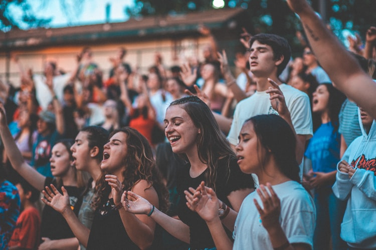
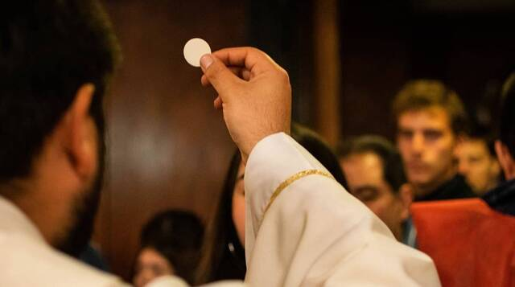

Comunidades Carismáticas
Núcleo de Parejas: Todos los jueves
Jóvenes: Adolescentes de 13 a 18 años (todos los viernes) Jóvenes Adultos de 19 a 30 años (todos los sábados)

Catequesis de Primera Comunión, Confirmación, prebautismales y prematrimoniales
BINGOS Y RIFAS PARROQUIALES

Ventas de Comida para apoyar a los proyectos parroquiales